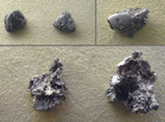
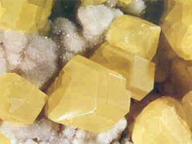

생성원리

정의 Definition
자유롭게 결합하지 않은 단 1종의 원소로 된 광물을 가리키며, 원소성분에 따라 크게 3가지로 나눌 수 있습니다.
대표적인 원소광물로
- 금속원소광물 : Cu, Ag, Au, Zn, Hg, Sn, Pb
- 준(반)금속원소광물 : As, Sb, Bi
- 비금속원소광물 : C, S
종류 Class
총 7종의 이미지가 있습니다.


이름 (name)
자연 동(native copper)
특 성 (characteristics)
- 가) 개요
- 주기율표 11족의 구리족 원소에 속하는 Cu(원자번호 29)로 이루어진 원소광물이다. 동은 아연과 주석 등과의 합금처리와 가공이 용이하고 전성, 연성, 열전도율, 전기전도율이 매우 뛰어나 산업재료로 널리 이용된다. 매장량이 풍부하며 경제성 높은 대표적인 광석으로 황동석(chalcopyrite)을 들 수 있다.
나) 화학식 : Cu(구리)
- 다) 산출지 : 미국
- (주요 생산국가 : 칠레, 미국, 캐나다, 페루, 호주)
라) 물리화학적 성질
| 구분 | 설명 |
|---|---|
| cleavage(쪼개짐) | none |
| fracture(깨짐) | 규칙성없이 들쭉날쭉, 울퉁불퉁한 형태 |
| color(색) | 적색, 동적색, 갈색,연분홍색 |
| density(밀도) | 8.5~9 |
| hardness(경도) | 2.5~3 |
| crystal system(결정계) | isometric(등축정계) |
| luster(광택) | metallic(금속광택) |
| streak(조흔색) | 적색 |
- 마) 용도
- 청동, 황동, 전기재료, 생활용기, 살충제

이름 (name)
자연 금(native gold)
특 성 (characteristics)
- 가) 개요
- 주기율표 11족의 구리족 원소에 속하는 Au(원자번호 79)로 이루어진 원소광물로 전성, 연성, 열전도율, 전기전도율이 구리보다 더 뛰어나며, 귀금속에 속하여 장식류 금제품으로 널리 사용된다. 다른 금속광물에 비해 경도가 낮은 편이지만 비중이 월등히 커 무겁다. 반응성이 없고 인체에 무해하며 주조가 매우 용이하다.
나) 화학식 : Au(금)
- 다) 산출지 : 미국, 미국, __(사진좌측부터)
- (주요 생산국가 : 남아프리카공화국, 호주, 페루, 러시아, 미국)
라) 물리화학적 성질
| 구분 | 설명 |
|---|---|
| cleavage(쪼개짐) | none |
| fracture(깨짐) | 규칙성없이 들쭉날쭉, 울퉁불퉁한 형태 |
| color(색) | 금빛 황색, 노란색, 일반적으로 황금빛 |
| density(밀도) | 16~19 |
| hardness(경도) | 2.5~3 |
| crystal system(결정계) | isometric(등축정계) |
| luster(광택) | metallic(금속광택) |
| streak(조흔색) | 담황색 |
- 마) 용도
- 컴퓨터 및 반도체 부품, 귀금속 장식류, 동전, 염료, 의료용 기기
- 
이름 (name)
자연 백금(native platinum)
특 성 (characteristics)
- 가) 개요
- 주기율표 10족의 백금족 원소에 속하는 Pt(원자번호 78)로 이루어진 원소광물로 처음 발견 당시 은과 비슷해 스페인어의 은(plata)에서 유추한 ’platina’ 에서 유래되었다. 산·염기와 반응성이 없고 공기와 수분에 매우 안정하며. 금보다 비중이 높고 은보다 단단하다. 인체에 무해하며 전성·연성, 전기전도도가 뛰어나다.
나) 화학식 : Pt(백금)
- 다) 산출지 : 남아프리카공화국, 영국(사진좌측부터)
- (주요 생산국가 : 남아프리카공화국, 호주, 페루, 러시아, 미국)
라) 물리화학적 성질
| 구분 | 설명 |
|---|---|
| cleavage(쪼개짐) | none |
| fracture(깨짐) | 규칙성없이 들쭉날쭉, 울퉁불퉁한 형태 |
| color(색) | 철회색, 암회색, 은색 |
| density(밀도) | 14~19 |
| hardness(경도) | 4.5~5 |
| crystal system(결정계) | 등축정계 |
| luster(광택) | 금속광택 |
| streak(조흔색) | 회색 |
- 마) 용도
- 귀금속, 촉매제, 전기기구, 저항온도계
이름 (name)
금강석(diamond)
특 성 (characteristics)
- 가) 개요
- 탄소, C(원자번호 6)로 이루어진 원소광물로 매우 단단하며 투명하고 아름다운 빛깔이 나타나 보석광물에 속한다. 파이프상으로 관입된 초염기성 킴벌라이트(kimberlite) 또는 풍화잔류되어 생성된 사광상에서 주로 발견된다.
나) 화학식 : C(탄소)
- 다) 산출지 : 남아프리카 공화국
- (주요 생산국가 : 남아프리카공화국, 러시아, 미국, 보츠와나, 인도)
라) 물리화학적 성질
| 구분 | 설명 |
|---|---|
| cleavage(쪼개짐) | perfect |
| fracture(깨짐) | 패각상 형태로 발달, 깨지기 어려움 |
| color(색) | 투명한 흰색, 흑색, 청색 |
| density(밀도) | 3.52 |
| hardness(경도) | 10 |
| crystal system(결정계) | 등축정계 |
| luster(광택) | 금강광택 |
| streak(조흔색) |
- 마) 용도
- 금속 및 유리 연마제, 보석광물, 4월의 탄생석
이름 (name)
자연 은(native silver)
특 성 (characteristics)
- 가) 개요
- 주기율표 11족의 구리족 원소에 속하는 Ag(원자번호 47)로 이루어진 원소광물로 전성, 연성, 열전도율, 전기전도도가 금(Au) 다음으로 뛰어나며 빛에 반사되어 아름다운 은빛을 낸다. 부식 저항력이 큰편이나 오존이나 황화물에는 반응을 일으킨다.
나) 화학식 : Ag(은)
- 다) 산출지 : 미국, 미국, 페루(사진좌측부터)
- (주요 생산국가 : 폴란드, 페루, 호주, 미국, 캐나다)
라) 물리화학적 성질
| 구분 | 설명 |
|---|---|
| cleavage(쪼개짐) | none |
| fracture(깨짐) | 규칙성없이 들죽날쭉, 울퉁불퉁한 형태 |
| color(색) | 은회색, 회백색, 회색 |
| density(밀도) | 10.1~11.3 |
| hardness(경도) | 2.5~3 |
| crystal system(결정계) | 등축정계 |
| luster(광택) | 금속광택 |
| streak(조흔색) | 은백색 |
- 마) 용도
- 보석류 장신구, 합금, 전기재료, 도금용, 동전, 의료용 기구
이름 (name)
흑연(graphite)
특 성 (characteristics)
- 가) 개요
- 금강석(diamond)과 동질이상인 원소 C(원자번호 6)로 이루어진 원소광물로 흑색을 띠어 석묵이라고도 한다. 금강석과 달리 경도가 매우 낮아 가루로 잘 떨어져 나가는 특성을 가지며, 전기 전도율이 높다.
나) 화학식 : C(탄소)
- 다) 산출지 : 스리랑카, 스리랑카, 한국(사진좌측부터)
- (주요 생산국가 : 인도, 브라질, 멕시코, 북한, 캐나다)
라) 물리화학적 성질
| 구분 | 설명 |
|---|---|
| cleavage(쪼개짐) | perfect |
| fracture(깨짐) | sectile, 칼에 잘린 듯한 형태로 발달 |
| color(색) | 흑색, 회암색, 철회색 |
| density(밀도) | 2.1~2.3 |
| hardness(경도) | 1 |
| crystal system(결정계) | 육방정계 |
| luster(광택) | 금속광택 |
| streak(조흔색) | 회색 |
- 마) 용도
- 연필심의 주 재료, 내화용, 원자로, 로케트 부품, 전지
- 
이름 (name)
자연 황(native sulfur)
특 성 (characteristics)
- 가) 개요
- 주기율표 16족의 산소족 원소에 속하는 S(원자번호 16)로 이루어진 원소광물로, 저온에서 이산화황을 발산하면서 용융되고, 화산 분화구나 온천 주변에서 산출된다.
나) 화학식 : S8 (S:황)
- 다) 산출지 : 멕시코, 미국,__(사진좌측부터)
- (주요 생산국가 : 미국, 캐나다, 중국, 러시아, 일본)
라) 물리화학적 성질
| 구분 | 설명 |
|---|---|
| cleavage(쪼개짐) | poor |
| fracture(깨짐) | sectile, 칼에 잘린 듯한 형태로 발달 |
| color(색) | 노란색, 노란 갈색, 노란 회색 |
| density(밀도) | 2.0~2.1 |
| hardness(경도) | 1.5~2 |
| crystal system(결정계) | 사방정계 |
| luster(광택) | 금강광택, 지방광택 |
| streak(조흔색) | 흰색 |
- 마) 용도
- 성냥의 재료로 잘 알려져 있으며, 이러한 연소성을 이용하여 화약제품에도 활용된다. 그 밖에 고무공업, 비료공업, 의료용 섬유공업의 재료 등으로 널리 이용된다.